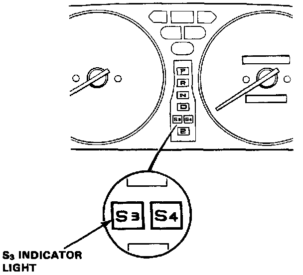
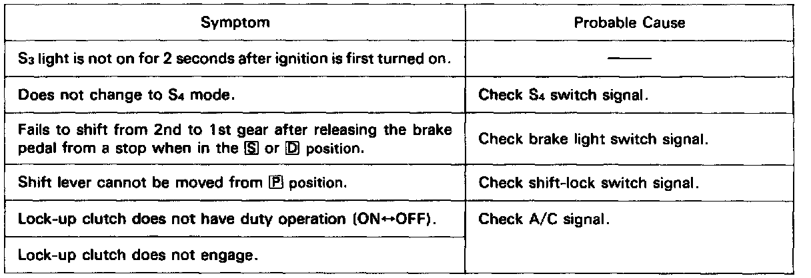

Diagnostic Strategies
To Access Trouble Codes
For problem diagnosis, count the number of blinks from the LED display and refer to Trouble Code Descriptions. If no abnormality is found from your inspection, inspect hydraulic system.

When the ignition switch is turned ON, the S3 indicator light comes on for about two seconds regardless of whether there is a problem. The S3 indicator light will also come on when in S3 mode.
If there is a system problem, the S3 indicator light will come on and continue to blink until the ignition key is turned OFF. When the ignition key is turned ON again, the S3 indicator light will not blink again for the original problem. But if the A/T control unit senses the original abnormality again with ignition switch ON, the S3 indicator light will blink again for the original problem. Therefore, even though the S3 indicator light does not come on when turning the ignition key ON, check the LED display for automatic transmission problem diagnosis.
If Trouble Code is Not Memorized
Since the LED problem code is retained in memory, it will blink again whenever the ignition key is turned on. If the LED problem code is not memorized, check the following causes:
- Check the Alternator Sensor fuse (10A) in the under-hood relay box.
- Check for an open circuit in the WHT/VEL wire between the Alternator Sensor fuse (10A) and A/T control unit B 12 terminal.
After making repair, disconnect the Alternator Sensor fuse (10A) in the under-hood relay box for more than ten seconds to reset LED display memory.
If Self-diagnosis LED Doesn't Blink
If the self-diagnosis LED indicator does not blink, perform an inspection according to the table listed below.
